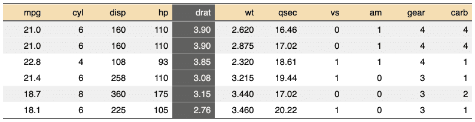
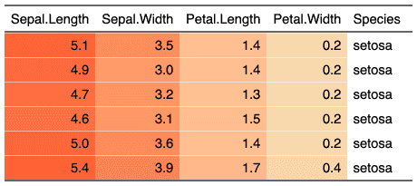

| bg {flextable} | R Documentation |
change background color of selected rows and columns of a flextable.
bg(x, i = NULL, j = NULL, bg, part = "body", source = j)
x |
a flextable object |
i |
rows selection |
j |
columns selection |
bg |
color to use as background color. If a function, function need to return a character vector of colors. |
part |
partname of the table (one of 'all', 'body', 'header', 'footer') |
source |
if bg is a function, source is specifying the dataset column to be used
as argument to |


Word does not allow you to apply transparency to table cells or paragraph shading.
Other sugar functions for table style:
align(),
bold(),
color(),
empty_blanks(),
fontsize(),
font(),
highlight(),
italic(),
line_spacing(),
padding(),
rotate(),
valign()
ft_1 <- flextable(head(mtcars))
ft_1 <- bg(ft_1, bg = "wheat", part = "header")
ft_1 <- bg(ft_1, i = ~ qsec < 18, bg = "#EFEFEF", part = "body")
ft_1 <- bg(ft_1, j = "drat", bg = "#606060", part = "all")
ft_1 <- color(ft_1, j = "drat", color = "white", part = "all")
ft_1
if(require("scales")){
ft_2 <- flextable(head(iris))
colourer <- col_numeric(
palette = c("wheat", "red"),
domain = c(0, 7))
ft_2 <- bg(ft_2, j = c("Sepal.Length", "Sepal.Width",
"Petal.Length", "Petal.Width"),
bg = colourer, part = "body")
ft_2
}